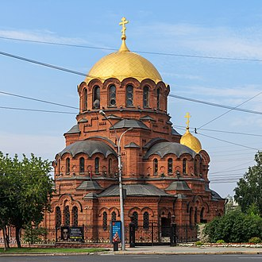
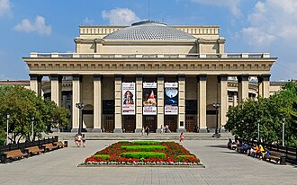

Historical and reference coats of arms


Novosibirsk
Guide. Places in this edition: 33.
OTIUM is the practice of deliberate leisure. In the classical sense, otium is not escape from work but time when attention returns to memory, landscape, and thought — without a utilitarian deadline.
We shape routes for lingering, not for checklist tourism. The goal is presence in a place rather than consumption of sights.
OTIUM is not a tour operator. It is an invitation to walk, pause, and leave a route unfinished if the light on a façade deserves another minute.
Historical and reference coats of arms
Guide. Places in this edition: 33.


Akademgorodok is a unique scientific and educational hub nestled within Novosibirsk's northern suburbs. Established in the mid-20th century, it became home to some of Russia’s most prominent research institutes and universities. Housed over 40 research institutions and higher education establishments. Hosted Nobel Prize winners and pioneers in various fields such as physics, biology, and mathematics. Located approximately 8 kilometers north of Novosibirsk city center. Features numerous parks and green spaces providing a tranquil environment for study and relaxation. Home to the famous Institute of Cytology and Genetics, known for its contributions to genetics research.
Founded in the 1950s as part of Joseph Stalin's ambitious plan to consolidate Soviet science under one roof, Akademgorodok grew into a thriving community where scientists, engineers, and students collaborated on groundbreaking projects. It remains a symbol of post-war Soviet innovation and intellectual prowess. Visitors can explore world-class research facilities, cutting-edge laboratories, and vibrant academic life that continues to shape modern science and education.





nia Independence Square, Minsk, Belarus Lukiškės Square, Vilnius, Lithuania Republic Square, Yerevan, Armenia Mustaqillik Maydoni, Tashkent, Uzbekistan Astana Square, Almaty, Kazakhstan Current Lenin Square, Cavriago, Italy Lenin Square, Khabarovsk, Russia Lenin Square, Novosibirsk, Russia Lenin Square, Donetsk, Ukraine Lenin Square, Khabarovsk, Russia Metro stations In Russia Ploshchad Lenina (St.





The Novosibirsk State Art Museum is a museum in Tsentralny City District of Novosibirsk, Russia. The building was designed by architect Andrey Kryachkov. History The museum was founded in 1958 as the Novosibirsk Regional Art Gallery.


Nestled within Novosibirsk's picturesque Botanical Garden, the Novosibirsk Zoo is one of Russia’s largest and most diverse zoos, showcasing over 4,000 animals representing more than 700 species. It houses over 4,000 animals from around the world. More than 700 different species are represented here. The zoo features several themed zones including African Savannah, Arctic Circle, and Tropical Rainforest. Visitors can enjoy guided tours led by knowledgeable staff members. Annual attendance exceeds half a million people.
Established in 1933, the zoo was initially a small collection of local wildlife but quickly expanded to become a major attraction for locals and visitors alike. Today it occupies a vast area of nearly 60 hectares, offering visitors a unique opportunity to explore both natural habitats and educational exhibits. The zoo plays a crucial role in conservation efforts by breeding endangered species and providing education on animal welfare and environmental issues.